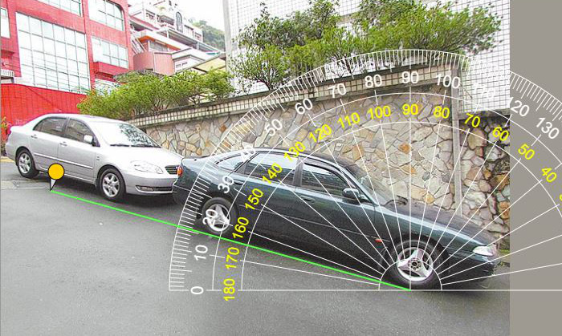

Đây là một thước đo trực tuyến trong suốt, cũng giúp bạn đo góc trong một bức ảnh, bạn có thể dễ dàng đo góc của bất kỳ vật nào xung quanh bạn, chụp ảnh và tải nó lên, sau đó kéo điểm giữa của thước đo góc tới đỉnh của góc.
Mỗi lần tôi muốn đo góc, tôi luôn không thể tìm được thước đo góc. May mắn thay, đây là một thước đo trực tuyến thuận tiện và thiết thực. Giờ đây, chúng ta có thể sử dụng máy tính xách tay, máy tính, máy tính bảng hoặc điện thoại thông minh để đo góc của mọi thứ, xung quanh chúng ta mọi lúc, mọi nơi.
Nếu bạn muốn đo một cái gì đó nhỏ, chỉ cần đặt nó trên màn hình và đo trực tiếp; Nếu bạn muốn đo một cái gì đó lớn hơn, bạn có thể chụp ảnh và tải nó lên, sau đó di chuyển điểm trung tâm của thước đo góc để đo góc của nó.
Bạn có thể chụp ảnh bất kỳ đối tượng nào bạn muốn đo, ví dụ: ô tô, đường, nhà, cầu thang hoặc núi, thước đo góc trong suốt Sau khi bạn tải lên hình ảnh, nó sẽ được hiển thị trong nền. sau đó, bạn có thể lái thước đo góc hoặc thêm đinh ghim để tìm ra mức độ của các góc, tải lên tệp chỉ chấp nhận tệp hình ảnh ở các định dạng jpg, jpeg, gif, png
Trong bảng điều khiển, nếu màu nền gần với thước đo góc và không dễ để phân biệt, bạn có thể thay đổi màu của thước đo góc để nhìn rõ. Ngoài ra, bạn có thể di chuyển nó, thu nhỏ hoặc phóng to kích thước của thước đo góc theo nhu cầu của bạn.
